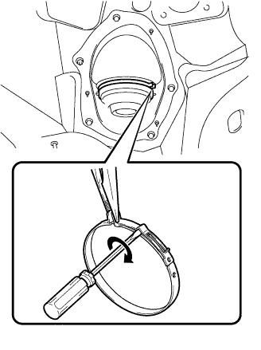
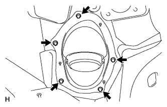

STEERING COLUMN ASSEMBLY (for Manual Tilt and Manual Telescopic Steering Column) > REMOVAL |
| 1. FRONT WHEELS FACING STRAIGHT AHEAD |
| 2. DISCONNECT CABLE FROM NEGATIVE BATTERY TERMINAL |
Disable the AUTO TILT AWAY function by changing the customize parameter (Click here).
Turn the engine switch on (IG). Operate the tilt and telescopic switch to fully extend and lower the steering column assembly.
Turn the engine switch off and disconnect the cable from the negative (-) battery terminal.
| 3. REMOVE LOWER NO. 3 STEERING WHEEL COVER |
 |
Detach the 2 claws and remove the steering wheel cover.
| 4. REMOVE LOWER NO. 2 STEERING WHEEL COVER |
 |
Detach the 2 claws and remove the steering wheel cover.
| 5. REMOVE STEERING PAD |
 |
Using a T30 "TORX" socket wrench, loosen the 2 screws until the groove along the screw circumference catches on the screw case.
 |
Pull out the steering pad from the steering wheel, as shown in the illustration. Then support the steering pad with one hand.
Disconnect the horn connector.
Disconnect the 2 connectors and remove the steering pad.
| 6. REMOVE STEERING WHEEL ASSEMBLY |
 |
Remove the steering wheel set nut.
Put matchmarks on the steering wheel and main shaft.
Using SST, remove the steering wheel assembly.
| 7. REMOVE LOWER STEERING COLUMN COVER |
 |
Remove the 3 screws.
Detach the 2 claws to remove the lower steering column cover.
| 8. REMOVE UPPER STEERING COLUMN COVER |
 |
Detach the 4 clips.
Detach the claw to remove the upper steering column cover.
| 9. REMOVE COMBINATION SWITCH ASSEMBLY WITH SPIRAL CABLE SUB-ASSEMBLY |
 |
Disconnect the 5 connectors from the combination switch with spiral cable.
 |
Using pliers, grip the claws of the clamp and remove the combination switch with spiral cable from the steering column.
| 10. REMOVE NO. 2 INSTRUMENT PANEL FINISH PANEL CUSHION |
 |
Place protective tape as shown in the illustration.
Using a moulding remover, detach the 7 claws and remove the panel cushion.
| 11. REMOVE LOWER INSTRUMENT PANEL PAD SUB-ASSEMBLY LH |
 |
Remove the clip.
Remove the screw.
Detach the 8 claws.
Remove the panel pad and disconnect the connectors and 2 clamps.
| 12. REMOVE INSTRUMENT SIDE PANEL LH |
 |
Place protective tape as shown in the illustration.
Using a moulding remover, detach the 6 claws and remove the side panel.
| 13. REMOVE NO. 1 INSTRUMENT CLUSTER FINISH PANEL GARNISH |
 |
Place protective tape as shown in the illustration.
Using a moulding remover, detach the 3 claws and remove the panel garnish.
| 14. REMOVE NO. 2 INSTRUMENT CLUSTER FINISH PANEL GARNISH |
 |
Place protective tape as shown in the illustration.
Using a moulding remover, detach the 2 claws and remove the panel garnish.
| 15. REMOVE INSTRUMENT CLUSTER FINISH PANEL SUB-ASSEMBLY (w/ Multi-information Display) |
 |
Detach the 9 claws.
Remove the finish panel and then disconnect the connector.
| 16. REMOVE INSTRUMENT CLUSTER FINISH PANEL SUB-ASSEMBLY (w/o Multi-information Display) |
 |
Remove the 4 screws.
Disconnect the connectors and remove the combination meter.
| 17. REMOVE NO. 1 INSTRUMENT PANEL UNDER COVER SUB-ASSEMBLY (w/ Floor Under Cover) |
 |
Remove the 2 screws.
Detach the 3 claws.
Remove the under cover and disconnect the connectors.
| 18. REMOVE FRONT DOOR SCUFF PLATE LH |
| 19. REMOVE COWL SIDE TRIM BOARD LH |
 |
Remove the cap nut.
Detach the 2 clips and remove the trim board.
| 20. REMOVE LOWER NO. 1 INSTRUMENT PANEL FINISH PANEL |
 |
Using a screwdriver, detach the 2 claws.
Open the hole cover.
 |
Remove the 2 bolts.
Detach the 14 claws.
 |
Detach the 2 claws and remove the sensor.
 |
Detach the 2 claws and disconnect the 2 control cables.
Remove the finish panel and then disconnect the connectors.
| 21. REMOVE NO. 1 SWITCH HOLE BASE |
 |
Detach the 4 claws.
Remove the switch hole base and then disconnect the connectors.
| 22. REMOVE DRIVER SIDE KNEE AIRBAG ASSEMBLY (w/ Driver Side Knee Airbag) |
 |
Remove the 5 bolts and driver side knee airbag.
Disconnect the connector.
| 23. REMOVE LOWER INSTRUMENT PANEL SUB-ASSEMBLY (w/o Driver Side Knee Airbag) |
 |
Detach the 2 claws and disconnect the DLC3.
Remove the 5 bolts and instrument panel.
| 24. DISCONNECT WIRE HARNESS PROTECTOR AND WIRE HARNESS |
 |
Detach the 2 claws to disconnect the wire harness protector and wire harness.
| 25. REMOVE NO. 3 AIR DUCT SUB-ASSEMBLY |
 |
Remove the clip.
Detach the 2 claws and remove the duct.
| 26. REMOVE STEERING COLUMN ASSEMBLY |
 |
Put matchmarks on the steering intermediate shaft and the steering column.
Remove the bolt.
 |
Remove the 4 nuts and steering column.
| 27. DISCONNECT STEERING INTERMEDIATE SHAFT ASSEMBLY |
 |
Put matchmarks on the steering intermediate shaft and the No. 2 steering intermediate shaft.
Remove the bolt, and then pull out the intermediate shaft toward the inside of the vehicle.
| 28. REMOVE STEERING COLUMN HOLE COVER SUB-ASSEMBLY |
 |
Hold the clamp with needle nose pliers, then insert a screwdriver and turn it in the direction shown in the illustration to remove the clamp of the steering column hole cover.
 |
Remove the 4 bolts and nut with the steering column hole cover from the vehicle.
| 29. DISCONNECT NO. 2 STEERING INTERMEDIATE SHAFT |
 |
Loosen the bolt and remove the No. 2 intermediate shaft.